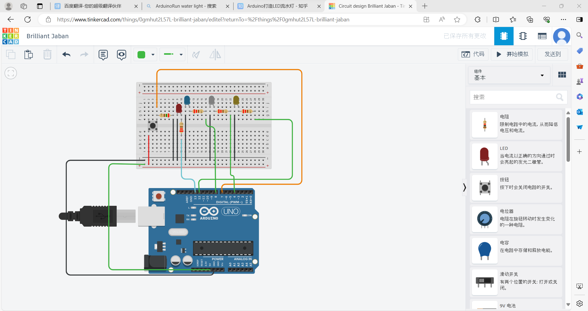
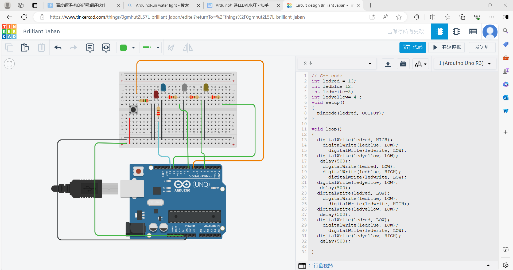
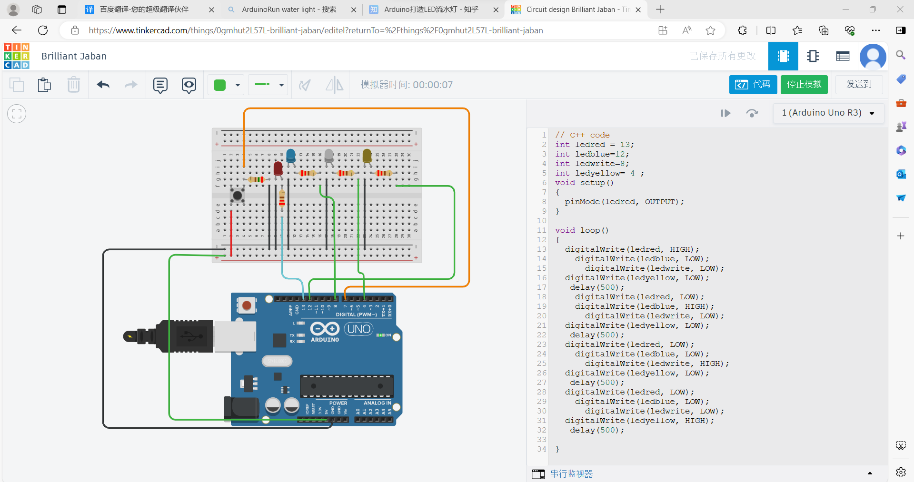
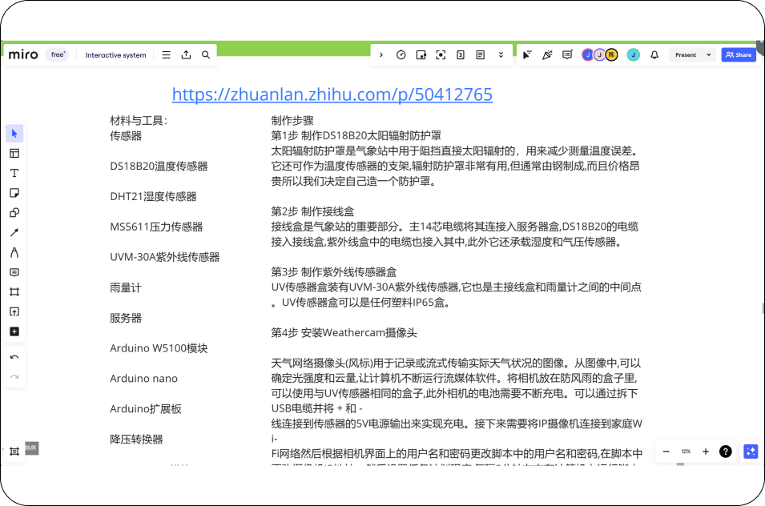
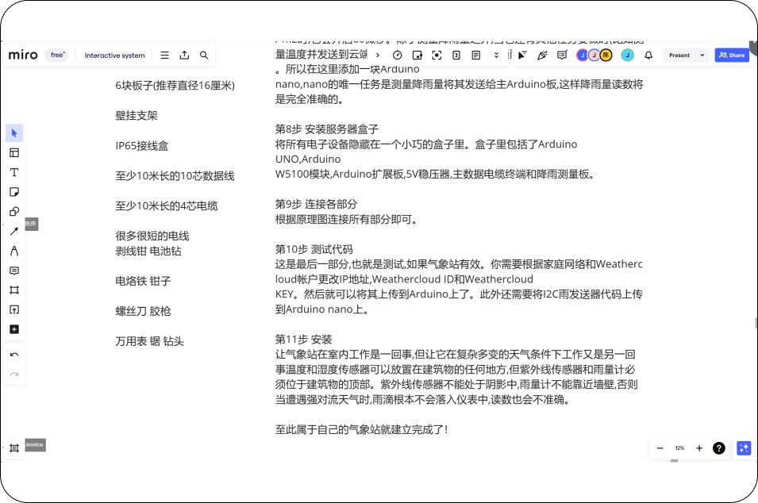

Course → Arduino
1.Class Practice
(switch controls the twin lights)



We started using Tinkercad to try and learn about flowing lights. Understand
the operating rules of Nano boards.
Tinkercad Attempt
3.Flowing light display
2.Arduino makes flowing lights
Code
Explanation
#include <NeoPixelBus.h>
#include <NeoPixelAnimator.h>
const uint16_t PixelCount = 16; // make sure to set this to the number of
pixels in your strip
const uint16_t PixelPin = 2; // make sure to set this to the correct pin,
ignored for Esp8266
const uint16_t AnimCount = PixelCount / 5 * 2 + 1; // we only need enough
animations for the tail and one extra
const uint16_t PixelFadeDuration = 300; // third of a second
// one second divide by the number of pixels = loop once a second
const uint16_t NextPixelMoveDuration = 1000 / PixelCount; // how fast we
move through the pixels
NeoGamma<NeoGammaTableMethod> colorGamma; // for any fade
animations, best to correct gamma
NeoPixelBus<NeoGrbFeature, NeoWs2812xMethod> strip(PixelCount,
PixelPin);
struct MyAnimationState
{
RgbColor StartingColor;
RgbColor EndingColor;
uint16_t IndexPixel; // which pixel this animation is effecting
};
NeoPixelAnimator animations(AnimCount); // NeoPixel animation management
object
MyAnimationState animationState[AnimCount];
uint16_t frontPixel = 0; // the front of the loop
RgbColor frontColor; // the color at the front of the loop
void SetRandomSeed()
{
uint32_t seed;
seed = analogRead(0);
delay(1);
for (int shifts = 3; shifts < 31; shifts += 3)
{
seed ^= analogRead(0) << shifts;
delay(1);
}
// Serial.println(seed);
randomSeed(seed);
}
void FadeOutAnimUpdate(const AnimationParam& param)
{
RgbColor updatedColor = RgbColor::LinearBlend(
animationState[param.index].StartingColor,
animationState[param.index].EndingColor,
param.progress);
// apply the color to the strip
strip.SetPixelColor(animationState[param.index].IndexPixel,
colorGamma.Correct(updatedColor));
}
void LoopAnimUpdate(const AnimationParam& param)
{
if (param.state == AnimationState_Completed)
{
// done, time to restart this position tracking animation/timer
animations.RestartAnimation(param.index);
frontPixel = (frontPixel + 1) % PixelCount; // increment and wrap
if (frontPixel == 0)
{
// we looped, lets pick a new front color
frontColor = HslColor(random(360) / 360.0f, 1.0f, 0.25f);
}
uint16_t indexAnim;
if (animations.NextAvailableAnimation(&indexAnim, 1))
{
animationState[indexAnim].StartingColor = frontColor;
animationState[indexAnim].EndingColor = RgbColor(0, 0, 0);
animationState[indexAnim].IndexPixel = frontPixel;
animations.StartAnimation(indexAnim, PixelFadeDuration,
FadeOutAnimUpdate);
}
}
}
void setup()
{
strip.Begin();
strip.Show();
SetRandomSeed();
// we use the index 0 animation to time how often we move to the next
// pixel in the strip
animations.StartAnimation(0, NextPixelMoveDuration, LoopAnimUpdate);
}
void loop()
{
// this is all that is needed to keep it running
// and avoiding using delay() is always a good thing for
// any timing related routines
animations.UpdateAnimations();
strip.Show();
}
Hardware configuration and initialization: PixelCount and PixelPin: define
the number of LEDs on the light strip and the pins they are connected to.
Ensure that these values match your hardware settings.
NeoPixelBus and NeoPixelAnimator: These two libraries provide the necessary
functions to control NeoPixel light strips, including color settings,
animation, and more.
NeoGamma<NeoGammaTableMethod>colorGamma;: used for color gamma
correction to ensure more accurate color display.
Animation parameter: AnimCount: Calculate the number of animations based on
the number of LEDs and the number of LEDs covered by each animation.
Assuming that each animation affects approximately one-fifth of the LED on
the light strip.
PixelFadeDuration: defines the length of time a color fades in and out.
NextPixelMoveDuration: defines the speed of LED movement in an animation,
which is the time required to move from one LED to the next.
Animation State Management: MyAnimationState Structure: defines the state of
each animation, including the start color, end color, and affected LED
index.
NeoPixelAnimator animations (AnimCount);: Create a NeoPixel animation
management object to control multiple animations.
AnimationState [AnimCount];: An array that stores all animation states.
Animation logic preparation: frontPixel and frontColor: These two variables
will be used to track the index and color of the LED flowing to the front in
the animation. Although the complete animation logic is not displayed in the
code snippet, these two variables are key to achieving a flowing light
effect.
Random Seed Setting (although this part may not be directly related to
animation logic): SetRandomSeed() function: used to set the seed for the
random number generator. This is very useful for animations that require
randomness, such as random color changes. The method of simulating the
reading of unconnected pins is used here, combined with bit operations to
generate a 31 bit random seed.

BBST
Final
BSST Team | ZWU
2024.6
4.some open source projects

The name of the project is to build a tall Weathercloud weather station
in Ardiuno
Advantages:
Using the Ardiuno nano board, which is the same as the board used in the
previous hardware class, it is better for us to learn to use and
operate.
Disadvantages:
At present, the hardware knowledge is relatively small, and a lot of
learning and practice are still needed. At the same time, the project
was just a meteorological device, and we needed to integrate it with our
thematic climate action, and as art and technology students, we needed a
more aesthetically pleasing and thought-provoking design solution.。

